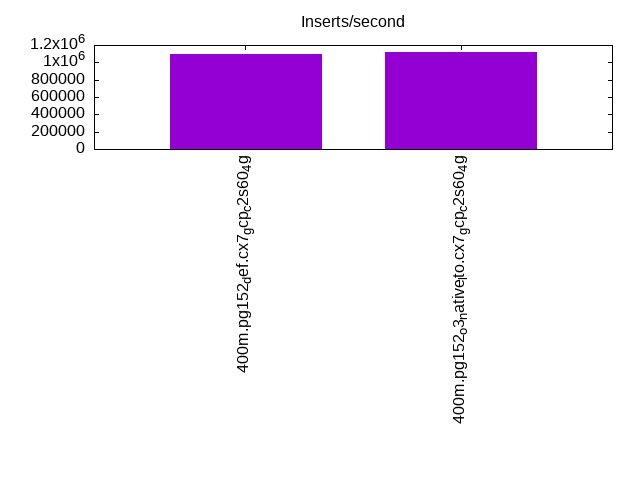
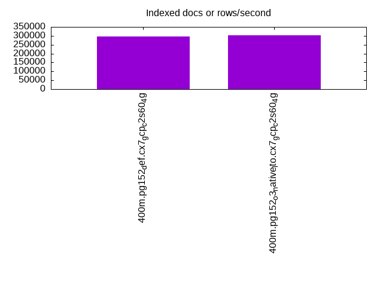
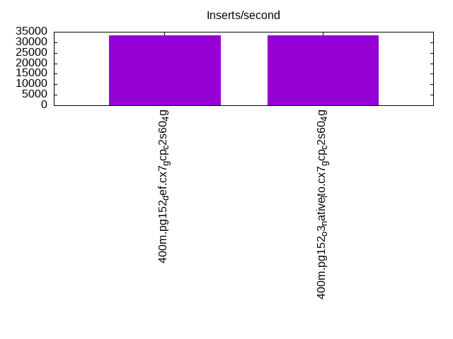
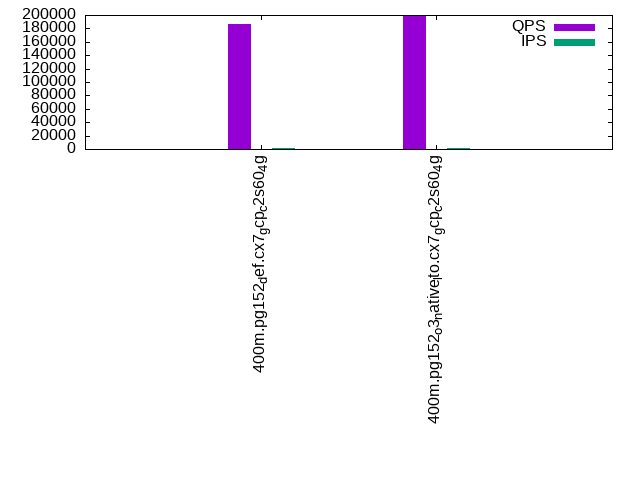
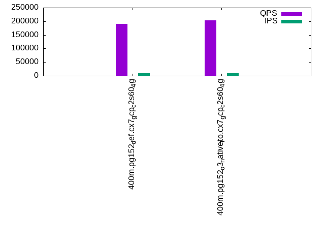
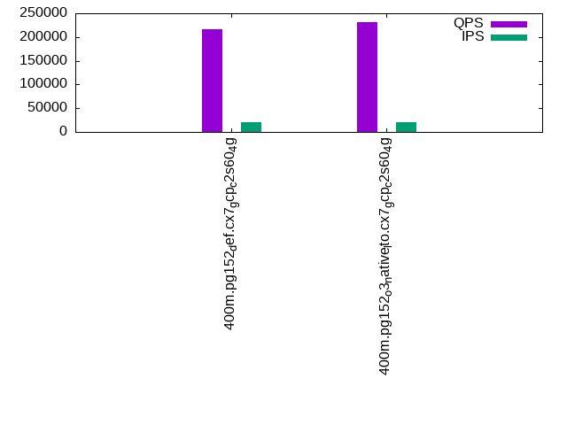

This is a report for the insert benchmark with 400M docs and 20 client(s). It is generated by scripts (bash, awk, sed) and Tufte might not be impressed. An overview of the insert benchmark is here and a short update is here. Below, by DBMS, I mean DBMS+version.config. An example is my8020.c10b40 where my means MySQL, 8020 is version 8.0.20 and c10b40 is the name for the configuration file.
The test server is a c2-standard-60 from GCP with 30 cores, hyperthreading disabled, 240G RAM and 3T from XFS and SW RAID 0 striped over 8 local NVMe drives. The benchmark was run with 20 clients and there were 1 or 2 connections per client (1 for queries, 1 for inserts). The benchmark loads 400M rows without secondary indexes, creates secondary indexes, loads another 400M rows then does 3 read+write tests for one hour each that do queries as fast as possible with 100, 500 and then 1000 writes/second/client concurrent with the queries. Each read-write test runs for 1800 seconds. The test was configured to use one table. The database fits in the OS page cache but not the DBMS buffer pool. Clients and the DBMS share one server. The per-database configs are in the per-database subdirectories here.
The tested DBMS are:
The numbers are inserts/s for l.i0 and l.i1, indexed docs (or rows) /s for l.x and queries/s for q*.2. The values are the average rate over the entire test for inserts (IPS) and queries (QPS). The range of values for IPS and QPS is split into 3 parts: bottom 25%, middle 50%, top 25%. Values in the bottom 25% have a red background, values in the top 25% have a green background and values in the middle have no color. A gray background is used for values that can be ignored because the DBMS did not sustain the target insert rate. Red backgrounds are not used when the minimum value is within 80% of the max value.
| dbms | l.i0 | l.x | l.i1 | q100.1 | q500.1 | q1000.1 |
|---|---|---|---|---|---|---|
| 400m.pg152_def.cx7_gcp_c2s60_4g | 1095890 | 295713 | 33394 | 187282 | 189846 | 215549 |
| 400m.pg152_o3_native_lto.cx7_gcp_c2s60_4g | 1120448 | 301734 | 33484 | 199988 | 202582 | 231098 |
This lists the average rate of inserts/s for the tests that do inserts concurrent with queries. For such tests the query rate is listed in the table above. The read+write tests are setup so that the insert rate should match the target rate every second. Cells that are not at least 95% of the target have a red background to indicate a failure to satisfy the target.
| dbms | q100.1 | q500.1 | q1000.1 |
|---|---|---|---|
| pg152_def.cx7_gcp_c2s60_4g | 1976 | 9885 | 19672 |
| pg152_o3_native_lto.cx7_gcp_c2s60_4g | 1976 | 9885 | 19694 |
| target | 2000 | 10000 | 20000 |
l.i0: load without secondary indexes. Graphs for performance per 1-second interval are here.
Average throughput:
Insert response time histogram: each cell has the percentage of responses that take <= the time in the header and max is the max response time in seconds. For the max column values in the top 25% of the range have a red background and in the bottom 25% of the range have a green background. The red background is not used when the min value is within 80% of the max value.
| dbms | 256us | 1ms | 4ms | 16ms | 64ms | 256ms | 1s | 4s | 16s | gt | max |
|---|---|---|---|---|---|---|---|---|---|---|---|
| pg152_def.cx7_gcp_c2s60_4g | 22.015 | 75.132 | 2.779 | 0.027 | 0.031 | 0.015 | 0.001 | 1.135 | |||
| pg152_o3_native_lto.cx7_gcp_c2s60_4g | 30.850 | 66.192 | 2.886 | 0.025 | 0.031 | 0.016 | 0.001 | 1.153 |
Performance metrics for the DBMS listed above. Some are normalized by throughput, others are not. Legend for results is here.
ips qps rps rmbps wps wmbps rpq rkbpq wpi wkbpi csps cpups cspq cpupq dbgb1 dbgb2 rss maxop p50 p99 tag 1095890 0 194 4.5 2232.8 462.8 0.000 0.004 0.002 0.432 289620 57.6 0.264 16 43.0 112.6 NA 1.135 61132 13091 400m.pg152_def.cx7_gcp_c2s60_4g 1120448 0 207 4.7 2271.6 476.3 0.000 0.004 0.002 0.435 323412 56.7 0.289 15 43.0 112.5 NA 1.153 62732 10189 400m.pg152_o3_native_lto.cx7_gcp_c2s60_4g
l.x: create secondary indexes.
Average throughput:
Performance metrics for the DBMS listed above. Some are normalized by throughput, others are not. Legend for results is here.
ips qps rps rmbps wps wmbps rpq rkbpq wpi wkbpi csps cpups cspq cpupq dbgb1 dbgb2 rss maxop p50 p99 tag 295713 0 2114 41.0 496.6 112.3 0.007 0.142 0.002 0.389 1957 3.3 0.007 3 78.3 161.9 0.0 0.002 NA NA 400m.pg152_def.cx7_gcp_c2s60_4g 301734 0 2211 43.4 517.5 117.7 0.007 0.147 0.002 0.399 2043 3.3 0.007 3 78.3 162.9 0.0 0.002 NA NA 400m.pg152_o3_native_lto.cx7_gcp_c2s60_4g
l.i1: continue load after secondary indexes created. Graphs for performance per 1-second interval are here.
Average throughput:
Insert response time histogram: each cell has the percentage of responses that take <= the time in the header and max is the max response time in seconds. For the max column values in the top 25% of the range have a red background and in the bottom 25% of the range have a green background. The red background is not used when the min value is within 80% of the max value.
| dbms | 256us | 1ms | 4ms | 16ms | 64ms | 256ms | 1s | 4s | 16s | gt | max |
|---|---|---|---|---|---|---|---|---|---|---|---|
| pg152_def.cx7_gcp_c2s60_4g | 0.046 | 5.715 | 88.848 | 5.389 | 0.003 | 0.668 | |||||
| pg152_o3_native_lto.cx7_gcp_c2s60_4g | 0.059 | 5.799 | 88.801 | 5.339 | 0.003 | 0.415 |
Performance metrics for the DBMS listed above. Some are normalized by throughput, others are not. Legend for results is here.
ips qps rps rmbps wps wmbps rpq rkbpq wpi wkbpi csps cpups cspq cpupq dbgb1 dbgb2 rss maxop p50 p99 tag 33394 0 71268 660.4 60853.8 583.2 2.134 20.249 1.822 17.883 128815 12.8 3.857 115 170.2 250.3 0.0 0.668 1698 749 400m.pg152_def.cx7_gcp_c2s60_4g 33484 0 71454 663.1 60922.3 584.9 2.134 20.277 1.819 17.888 129359 12.5 3.863 112 170.2 252.0 0.0 0.415 1698 749 400m.pg152_o3_native_lto.cx7_gcp_c2s60_4g
q100.1: range queries with 100 insert/s per client. Graphs for performance per 1-second interval are here.
Average throughput:
Query response time histogram: each cell has the percentage of responses that take <= the time in the header and max is the max response time in seconds. For max values in the top 25% of the range have a red background and in the bottom 25% of the range have a green background. The red background is not used when the min value is within 80% of the max value.
| dbms | 256us | 1ms | 4ms | 16ms | 64ms | 256ms | 1s | 4s | 16s | gt | max |
|---|---|---|---|---|---|---|---|---|---|---|---|
| pg152_def.cx7_gcp_c2s60_4g | 99.903 | 0.093 | 0.002 | 0.001 | nonzero | nonzero | 0.126 | ||||
| pg152_o3_native_lto.cx7_gcp_c2s60_4g | 99.927 | 0.070 | 0.002 | 0.001 | nonzero | 0.027 |
Insert response time histogram: each cell has the percentage of responses that take <= the time in the header and max is the max response time in seconds. For max values in the top 25% of the range have a red background and in the bottom 25% of the range have a green background. The red background is not used when the min value is within 80% of the max value.
| dbms | 256us | 1ms | 4ms | 16ms | 64ms | 256ms | 1s | 4s | 16s | gt | max |
|---|---|---|---|---|---|---|---|---|---|---|---|
| pg152_def.cx7_gcp_c2s60_4g | 0.800 | 99.094 | 0.044 | 0.061 | 0.385 | ||||||
| pg152_o3_native_lto.cx7_gcp_c2s60_4g | 0.690 | 99.239 | 0.036 | 0.035 | 0.479 |
Performance metrics for the DBMS listed above. Some are normalized by throughput, others are not. Legend for results is here.
ips qps rps rmbps wps wmbps rpq rkbpq wpi wkbpi csps cpups cspq cpupq dbgb1 dbgb2 rss maxop p50 p99 tag 1976 187282 3750 38.4 4121.4 50.9 0.020 0.210 2.086 26.375 670799 63.2 3.582 101 171.1 230.6 0.0 0.126 9302 8870 400m.pg152_def.cx7_gcp_c2s60_4g 1976 199988 3761 38.6 4124.0 51.0 0.019 0.198 2.087 26.427 713561 62.6 3.568 94 171.1 232.2 0.0 0.027 10021 9573 400m.pg152_o3_native_lto.cx7_gcp_c2s60_4g
q500.1: range queries with 500 insert/s per client. Graphs for performance per 1-second interval are here.
Average throughput:
Query response time histogram: each cell has the percentage of responses that take <= the time in the header and max is the max response time in seconds. For max values in the top 25% of the range have a red background and in the bottom 25% of the range have a green background. The red background is not used when the min value is within 80% of the max value.
| dbms | 256us | 1ms | 4ms | 16ms | 64ms | 256ms | 1s | 4s | 16s | gt | max |
|---|---|---|---|---|---|---|---|---|---|---|---|
| pg152_def.cx7_gcp_c2s60_4g | 99.643 | 0.345 | 0.011 | 0.001 | nonzero | 0.028 | |||||
| pg152_o3_native_lto.cx7_gcp_c2s60_4g | 99.708 | 0.280 | 0.011 | 0.001 | nonzero | 0.030 |
Insert response time histogram: each cell has the percentage of responses that take <= the time in the header and max is the max response time in seconds. For max values in the top 25% of the range have a red background and in the bottom 25% of the range have a green background. The red background is not used when the min value is within 80% of the max value.
| dbms | 256us | 1ms | 4ms | 16ms | 64ms | 256ms | 1s | 4s | 16s | gt | max |
|---|---|---|---|---|---|---|---|---|---|---|---|
| pg152_def.cx7_gcp_c2s60_4g | 0.902 | 99.073 | 0.026 | 0.166 | |||||||
| pg152_o3_native_lto.cx7_gcp_c2s60_4g | 0.878 | 99.089 | 0.026 | 0.007 | 0.329 |
Performance metrics for the DBMS listed above. Some are normalized by throughput, others are not. Legend for results is here.
ips qps rps rmbps wps wmbps rpq rkbpq wpi wkbpi csps cpups cspq cpupq dbgb1 dbgb2 rss maxop p50 p99 tag 9885 189846 17426 183.1 19528.3 207.4 0.092 0.987 1.976 21.483 657913 65.7 3.466 104 176.0 231.1 0.0 0.028 9413 8778 400m.pg152_def.cx7_gcp_c2s60_4g 9885 202582 17609 183.8 19534.4 208.8 0.087 0.929 1.976 21.629 699796 65.4 3.454 97 176.0 229.8 0.0 0.030 10053 9338 400m.pg152_o3_native_lto.cx7_gcp_c2s60_4g
q1000.1: range queries with 1000 insert/s per client. Graphs for performance per 1-second interval are here.
Average throughput:
Query response time histogram: each cell has the percentage of responses that take <= the time in the header and max is the max response time in seconds. For max values in the top 25% of the range have a red background and in the bottom 25% of the range have a green background. The red background is not used when the min value is within 80% of the max value.
| dbms | 256us | 1ms | 4ms | 16ms | 64ms | 256ms | 1s | 4s | 16s | gt | max |
|---|---|---|---|---|---|---|---|---|---|---|---|
| pg152_def.cx7_gcp_c2s60_4g | 99.423 | 0.555 | 0.021 | 0.001 | nonzero | nonzero | 0.082 | ||||
| pg152_o3_native_lto.cx7_gcp_c2s60_4g | 99.512 | 0.470 | 0.017 | 0.001 | nonzero | nonzero | 0.069 |
Insert response time histogram: each cell has the percentage of responses that take <= the time in the header and max is the max response time in seconds. For max values in the top 25% of the range have a red background and in the bottom 25% of the range have a green background. The red background is not used when the min value is within 80% of the max value.
| dbms | 256us | 1ms | 4ms | 16ms | 64ms | 256ms | 1s | 4s | 16s | gt | max |
|---|---|---|---|---|---|---|---|---|---|---|---|
| pg152_def.cx7_gcp_c2s60_4g | 1.481 | 93.428 | 5.087 | 0.004 | 0.585 | ||||||
| pg152_o3_native_lto.cx7_gcp_c2s60_4g | 2.145 | 92.861 | 4.993 | 0.001 | 0.411 |
Performance metrics for the DBMS listed above. Some are normalized by throughput, others are not. Legend for results is here.
ips qps rps rmbps wps wmbps rpq rkbpq wpi wkbpi csps cpups cspq cpupq dbgb1 dbgb2 rss maxop p50 p99 tag 19672 215549 37684 381.7 37406.8 393.5 0.175 1.813 1.902 20.482 670476 69.7 3.111 97 189.4 261.2 0.0 0.082 10644 8027 400m.pg152_def.cx7_gcp_c2s60_4g 19694 231098 37974 384.3 37296.6 391.6 0.164 1.703 1.894 20.364 718858 69.6 3.111 90 189.4 261.2 0.0 0.069 11385 8602 400m.pg152_o3_native_lto.cx7_gcp_c2s60_4g
l.i0: load without secondary indexes
Performance metrics for all DBMS, not just the ones listed above. Some are normalized by throughput, others are not. Legend for results is here.
ips qps rps rmbps wps wmbps rpq rkbpq wpi wkbpi csps cpups cspq cpupq dbgb1 dbgb2 rss maxop p50 p99 tag 1095890 0 194 4.5 2232.8 462.8 0.000 0.004 0.002 0.432 289620 57.6 0.264 16 43.0 112.6 NA 1.135 61132 13091 400m.pg152_def.cx7_gcp_c2s60_4g 1120448 0 207 4.7 2271.6 476.3 0.000 0.004 0.002 0.435 323412 56.7 0.289 15 43.0 112.5 NA 1.153 62732 10189 400m.pg152_o3_native_lto.cx7_gcp_c2s60_4g
l.x: create secondary indexes
Performance metrics for all DBMS, not just the ones listed above. Some are normalized by throughput, others are not. Legend for results is here.
ips qps rps rmbps wps wmbps rpq rkbpq wpi wkbpi csps cpups cspq cpupq dbgb1 dbgb2 rss maxop p50 p99 tag 295713 0 2114 41.0 496.6 112.3 0.007 0.142 0.002 0.389 1957 3.3 0.007 3 78.3 161.9 0.0 0.002 NA NA 400m.pg152_def.cx7_gcp_c2s60_4g 301734 0 2211 43.4 517.5 117.7 0.007 0.147 0.002 0.399 2043 3.3 0.007 3 78.3 162.9 0.0 0.002 NA NA 400m.pg152_o3_native_lto.cx7_gcp_c2s60_4g
l.i1: continue load after secondary indexes created
Performance metrics for all DBMS, not just the ones listed above. Some are normalized by throughput, others are not. Legend for results is here.
ips qps rps rmbps wps wmbps rpq rkbpq wpi wkbpi csps cpups cspq cpupq dbgb1 dbgb2 rss maxop p50 p99 tag 33394 0 71268 660.4 60853.8 583.2 2.134 20.249 1.822 17.883 128815 12.8 3.857 115 170.2 250.3 0.0 0.668 1698 749 400m.pg152_def.cx7_gcp_c2s60_4g 33484 0 71454 663.1 60922.3 584.9 2.134 20.277 1.819 17.888 129359 12.5 3.863 112 170.2 252.0 0.0 0.415 1698 749 400m.pg152_o3_native_lto.cx7_gcp_c2s60_4g
q100.1: range queries with 100 insert/s per client
Performance metrics for all DBMS, not just the ones listed above. Some are normalized by throughput, others are not. Legend for results is here.
ips qps rps rmbps wps wmbps rpq rkbpq wpi wkbpi csps cpups cspq cpupq dbgb1 dbgb2 rss maxop p50 p99 tag 1976 187282 3750 38.4 4121.4 50.9 0.020 0.210 2.086 26.375 670799 63.2 3.582 101 171.1 230.6 0.0 0.126 9302 8870 400m.pg152_def.cx7_gcp_c2s60_4g 1976 199988 3761 38.6 4124.0 51.0 0.019 0.198 2.087 26.427 713561 62.6 3.568 94 171.1 232.2 0.0 0.027 10021 9573 400m.pg152_o3_native_lto.cx7_gcp_c2s60_4g
q500.1: range queries with 500 insert/s per client
Performance metrics for all DBMS, not just the ones listed above. Some are normalized by throughput, others are not. Legend for results is here.
ips qps rps rmbps wps wmbps rpq rkbpq wpi wkbpi csps cpups cspq cpupq dbgb1 dbgb2 rss maxop p50 p99 tag 9885 189846 17426 183.1 19528.3 207.4 0.092 0.987 1.976 21.483 657913 65.7 3.466 104 176.0 231.1 0.0 0.028 9413 8778 400m.pg152_def.cx7_gcp_c2s60_4g 9885 202582 17609 183.8 19534.4 208.8 0.087 0.929 1.976 21.629 699796 65.4 3.454 97 176.0 229.8 0.0 0.030 10053 9338 400m.pg152_o3_native_lto.cx7_gcp_c2s60_4g
q1000.1: range queries with 1000 insert/s per client
Performance metrics for all DBMS, not just the ones listed above. Some are normalized by throughput, others are not. Legend for results is here.
ips qps rps rmbps wps wmbps rpq rkbpq wpi wkbpi csps cpups cspq cpupq dbgb1 dbgb2 rss maxop p50 p99 tag 19672 215549 37684 381.7 37406.8 393.5 0.175 1.813 1.902 20.482 670476 69.7 3.111 97 189.4 261.2 0.0 0.082 10644 8027 400m.pg152_def.cx7_gcp_c2s60_4g 19694 231098 37974 384.3 37296.6 391.6 0.164 1.703 1.894 20.364 718858 69.6 3.111 90 189.4 261.2 0.0 0.069 11385 8602 400m.pg152_o3_native_lto.cx7_gcp_c2s60_4g
Insert response time histogram
256us 1ms 4ms 16ms 64ms 256ms 1s 4s 16s gt max tag 0.000 22.015 75.132 2.779 0.027 0.031 0.015 0.001 0.000 0.000 1.135 pg152_def.cx7_gcp_c2s60_4g 0.000 30.850 66.192 2.886 0.025 0.031 0.016 0.001 0.000 0.000 1.153 pg152_o3_native_lto.cx7_gcp_c2s60_4g
TODO - determine whether there is data for create index response time
Insert response time histogram
256us 1ms 4ms 16ms 64ms 256ms 1s 4s 16s gt max tag 0.000 0.000 0.046 5.715 88.848 5.389 0.003 0.000 0.000 0.000 0.668 pg152_def.cx7_gcp_c2s60_4g 0.000 0.000 0.059 5.799 88.801 5.339 0.003 0.000 0.000 0.000 0.415 pg152_o3_native_lto.cx7_gcp_c2s60_4g
Query response time histogram
256us 1ms 4ms 16ms 64ms 256ms 1s 4s 16s gt max tag 99.903 0.093 0.002 0.001 nonzero nonzero 0.000 0.000 0.000 0.000 0.126 pg152_def.cx7_gcp_c2s60_4g 99.927 0.070 0.002 0.001 nonzero 0.000 0.000 0.000 0.000 0.000 0.027 pg152_o3_native_lto.cx7_gcp_c2s60_4g
Insert response time histogram
256us 1ms 4ms 16ms 64ms 256ms 1s 4s 16s gt max tag 0.000 0.000 0.000 0.800 99.094 0.044 0.061 0.000 0.000 0.000 0.385 pg152_def.cx7_gcp_c2s60_4g 0.000 0.000 0.000 0.690 99.239 0.036 0.035 0.000 0.000 0.000 0.479 pg152_o3_native_lto.cx7_gcp_c2s60_4g
Query response time histogram
256us 1ms 4ms 16ms 64ms 256ms 1s 4s 16s gt max tag 99.643 0.345 0.011 0.001 nonzero 0.000 0.000 0.000 0.000 0.000 0.028 pg152_def.cx7_gcp_c2s60_4g 99.708 0.280 0.011 0.001 nonzero 0.000 0.000 0.000 0.000 0.000 0.030 pg152_o3_native_lto.cx7_gcp_c2s60_4g
Insert response time histogram
256us 1ms 4ms 16ms 64ms 256ms 1s 4s 16s gt max tag 0.000 0.000 0.000 0.902 99.073 0.026 0.000 0.000 0.000 0.000 0.166 pg152_def.cx7_gcp_c2s60_4g 0.000 0.000 0.000 0.878 99.089 0.026 0.007 0.000 0.000 0.000 0.329 pg152_o3_native_lto.cx7_gcp_c2s60_4g
Query response time histogram
256us 1ms 4ms 16ms 64ms 256ms 1s 4s 16s gt max tag 99.423 0.555 0.021 0.001 nonzero nonzero 0.000 0.000 0.000 0.000 0.082 pg152_def.cx7_gcp_c2s60_4g 99.512 0.470 0.017 0.001 nonzero nonzero 0.000 0.000 0.000 0.000 0.069 pg152_o3_native_lto.cx7_gcp_c2s60_4g
Insert response time histogram
256us 1ms 4ms 16ms 64ms 256ms 1s 4s 16s gt max tag 0.000 0.000 0.000 1.481 93.428 5.087 0.004 0.000 0.000 0.000 0.585 pg152_def.cx7_gcp_c2s60_4g 0.000 0.000 0.000 2.145 92.861 4.993 0.001 0.000 0.000 0.000 0.411 pg152_o3_native_lto.cx7_gcp_c2s60_4g